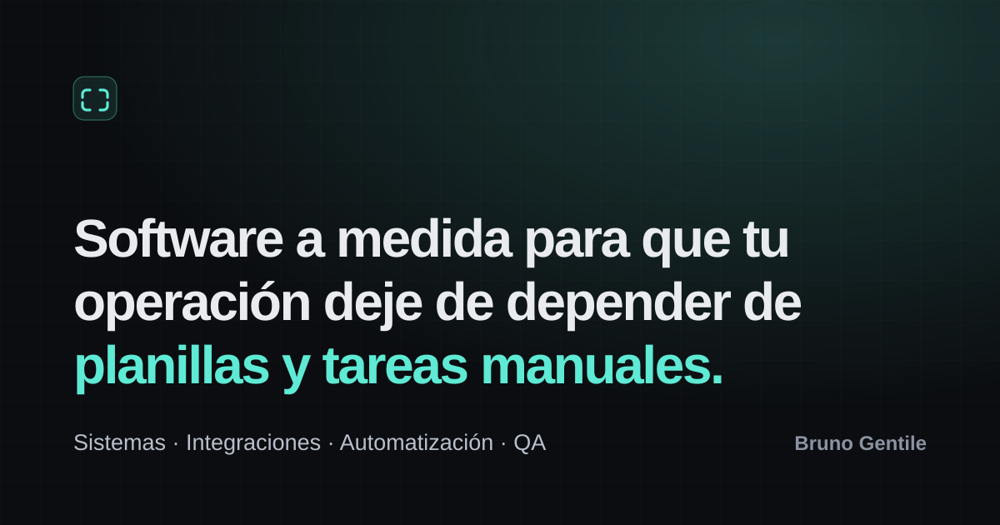

Cómo exportar la imagen social:
1) Imprimí esta página con Destino: Guardar como PDF (tamaño sin márgenes) o
tomá una captura del área de 1200×630.
2) Convertí el resultado a assets/social-card.png (1200×630).
3) En index.html, cambiá assets/social-card.svg por
assets/social-card.png en las etiquetas og:image y
twitter:image.
Motivo: Facebook, WhatsApp y LinkedIn no siempre renderizan SVG como imagen de vista previa.
